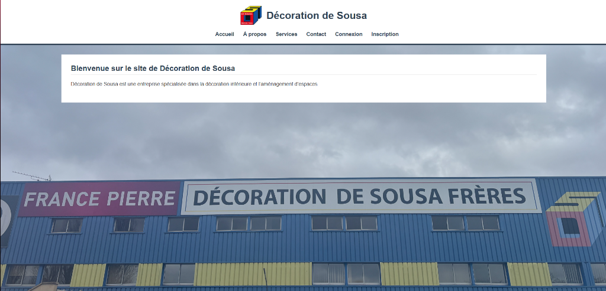
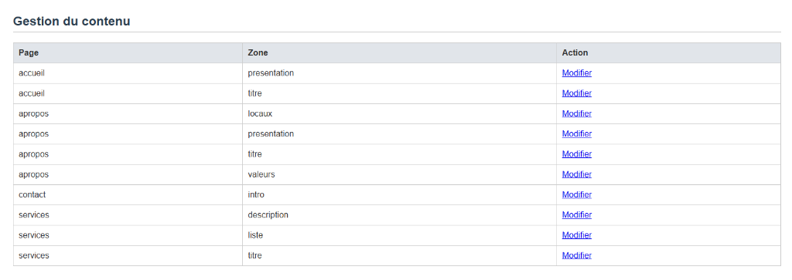

Développement d'un site web dynamique administrable en temps réel via une interface administrateur dédiée. Réalisé lors de mon stage de 2ème année chez Gestion DS.
Consulte le rapport complet détaillant mon stage de 2ème année.
Pour approfondir mes compétences techniques en développement web lors de ce second stage, l'entreprise Gestion DS m'a confié la mission de concevoir un site internet dynamique. Il devait être parfaitement administrable en autonomie, et inclure un espace sécurisé pour les utilisateurs et l'administration.
Mise en valeur des locaux de Décoration de Sousa, permettant de présenter brièvement l'activité de l'entreprise avec une interface moderne.

Interface sécurisée réservée aux administrateurs permettant de modifier les différentes sections de chaque page (Accueil, À propos, Services...) de façon dynamique.

Logique métier côté serveur et communication sécurisée avec la BDD.
Mise en place et architecture de la base de données relationnelle.
Intégration d'interfaces ergonomiques, responsives et dynamiques.
Mécanisme d'authentification avec séparation public / privé.
{kind=link}